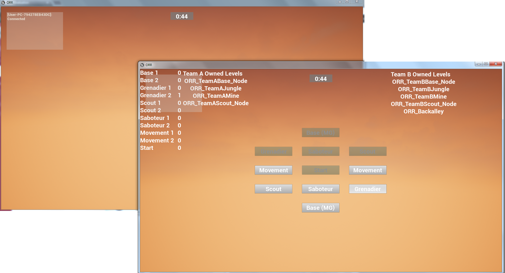

Operation: Red Rhino SIP Presentation Website

Team Members:
- Alexander Watson - Head Designer
- Isaac Morales - Class Designer / Weapon Artist
- Dom Kane - Level Designer / 3D Artist
- Anthony Parsch - Game Programming
- Charles Cozart - Game Programming
Innovation Brief
The innovation of Operation: Red Rhino is the implementation of a player directed
session progression system in which players control the objectives and locales of the next battle. The
locations, objectives, and rewards are all tied together and the winning players choose from available
groupings.
What is Operation: Red Rhino?
Operation: Red Rhino is an prototype implementation of a player directed session progression system
(referred to as the "node vote system")
developed in Unreal Engine 4 using Blueprint and C++. The progression system allows the players to
choose the next locale, each with its own objective. Each locale that a team owns provides the team
with rewards specific to the locale.
Why is this Innovative?
The implementation of a player directed session progression system provides a platform for the
system to be mimicked in future video games. The system itself allows individual multiplayer match to
feel important to the players, increasing replayability, as each choice of locale within a session
provides the winning team with a specific benefit.
How is this Implemented?
The prototype is a multiplayer game built from an Unreal 4 multiplayer first person shooter template
project. The node vote system was then placed at the end of every match, multiple classes were added
to the game to represent rewards for the winning team, and a series of locales were made in the game.